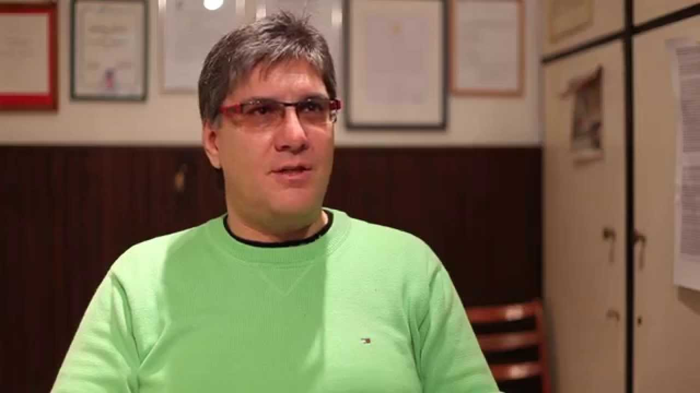

Photo gallery
2020.11.19 09:24





- ABS kocka javítás - ABS javítás - REWO-PRO KFT
A javítás ideje hibafüggő, általában 2-7 munkanapot vesz igénybe aluminium hengerfejek esetén. Ez változhat járulékos munkák esetén, vagy, ha a szükséges alkatrész nincs raktáron az országban. Vasöntvény-hengerfejek esetében a porszórásos repedésjavítás jelentősen megnöveli a javítás összidejét! Elérheti a 3-5 ... - RRR Bt Karosszéria & kipufogó javítás hegesztés,alvázvédelem
Ha beesik a fékpedál, lent fog a fék vagy folyik a fékolaj az ABS kocka meghibásodhatott. Professzionális ABS kocka javítás Budapesten a III. és a X. kerületben illetve vidéken 5 év garanciával!Bárhol az országban! Minden autótípus, Suzuki Swift, Ignis, SX4, Audi, BMW, Mercedes, Fiat, Opel, Skoda, VW, Renault, Peugeot ABS kocka felújítását vállaljuk. - Tetőkárpit javítás, felújítás - Ha megereszkedett a ...
A javítás menete: A hibás kormányművet, szervószivattyút, kormányoszlopot ki kell szereltetni szervizben. Mi csak a kiszerelt alkatrészt javítjuk vagy cseréljük. (Igény esetén a ki és beszerelésre tudunk ajánlani partnerszervizt. - Redőny javítás | redőny szerelés | redőny javítás árak ...
Elektromos javítás A gyakoribb típusú, 2 és 4 ütemű külső csónakmotorok javítását vállaljuk, ezek belmotorok, és külmotorok .Motorok gyújtó berendezését, önindító,töltő berendezéseit javítjuk, elektromos hibakeresését és felújítását. - Kormánymű felújítás, javítás - Keraprogress Kft
Erősáramú háztartási készülékek szervizelése, beszerzése, szaktanácsadás. Mosógép javítás, szárítógép javítás, mosogatógép javítás ... - NAV - Elektronikus bevallás javításnak folyamata, adózói ...
Karosszéria javítás, kipufogó javítás és hegesztés, autó fényezés, hegesztés, alváz és üregvédelem. Minőség, kedvező árak! Alvázvédelem Karosszéria javítás Budapest, Érd,Lakatos műhely Budaörs, Diósd, Törökbálint - Karosszeria.net - Szélvédő javítás - fényszóró polírozás Veszprém - Szélvédő ...
A redőny javítás az utóbbi években vált fő profilunkká. A Redőnység fantázianevet néhány éve találtuk ki, azóta országos, redőny javítással foglalkozó csapattá szerveződtünk. Munkatársaim rugalmas időbeosztása, a jól szervezett munkafelvétel, valamint a redőny javításban való többéves gyakorlat lehetővé ... - Megbízható Szerelő – Javítás – tanácsadás
Szúnyoghálók javítás, készítés (fix, oldalhúzós, rolós) Szalagfüggöny, reluxa készítése Kiszállás Budapesten és Pest megyében akár a mai nap! Kedvező árak, állandó akciók, GARANCIA Redőny, szúnyogháló javítás, szerelés, gyártás Maglódon és környékén ... - Tápegység javítás PC Tablet Telefon Számítógép Laptop ...
Tápegység javítás PC Tablet Telefon Számítógép Laptop tápegység javítás Budapest VII. kerület Alsó erdősor 3., +36703172518 - GÁL Motorcsónak Szervíz | Csónakmotor javítás
Adózói javítás: Az adót, az adó alapját vagy a költségvetési támogatást nem érintő módosítás az alapbevalláson, a „Javítani kívánt bevallás vonalkódja” mező üres, ki van töltve az adózói javítás jelölés, de nincs kitöltve az önellenőrzés jele.